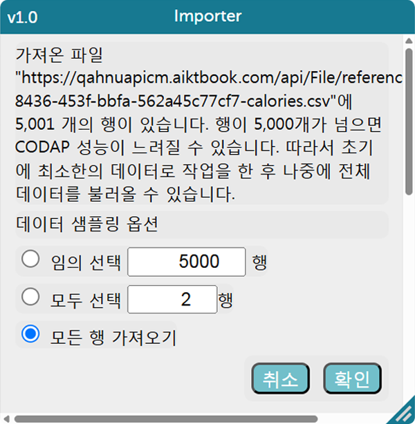
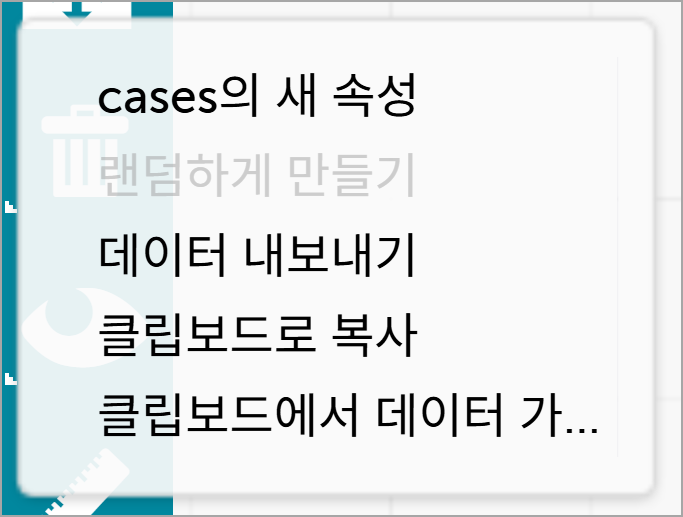
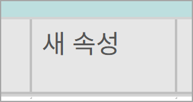
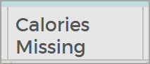
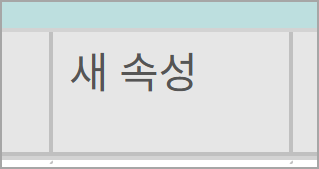
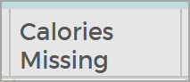
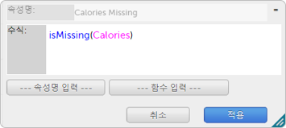

칼로리 데이터 전처리
칼로리 데이터의 전처리를 코답을 사용하여 진행해 보자. 빅데이터 전처리는 다음과 같은 순서로 진행한다.
1. 문제 상황 이해하기
칼로리는 신체를 유지하고 일상생활의 모든 활동을 하기 위해 필요한 에너지 단위이다.
건강 관리를 위한 칼로리 데이터의 정확한 분석을 위해 전처리를 해 보자.
2. 데이터 수집하기
캐글 웹 사이트에 접속한 후 fmendes-DAT263x-demos를 검색하여 칼로리 데이터를 내려받는다.
(단, 이 실습에서는 저장된 csv 파일을 사용한다.)
(단, 이 실습에서는 저장된 csv 파일을 사용한다.)
3. 데이터 탐색하기
데이터 불러오기, 데이터 살펴보기, 데이터 합치기 단계를 실행한다.
데이터 불러오기
calories.csv, excercise.csv에 각각 저장된 칼로리 데이터와 운동 데이터를 가져온다.
- ①팝업창의 새 문서 버튼을 클릭한다.
-
②
오른쪽 상단의 실습 파일 보기 버튼( )을 클릭하여 calories.csv의 주소를 복사( )한다.
-
③
메뉴( )의 ‘가져오기’에서 URL 탭을 선택하여 복사한 주소를 붙여 넣은 뒤 데이터 가져오기 버튼을 클릭한다.
-
④
Importer 팝업창에서 ‘모든 행 가져오기’를 선택하고 확인 버튼을 클릭한다.
- ⑤같은 방식으로 exercise.csv의 주소를 복사하여 데이터를 가져온다.
데이터 살펴보기
데이터 전처리를 계획하기 위해 데이터를 살펴본다.
- ①데이터를 불러오면 calories와 exercise 두 개의 테이블이 생성된다.
-
②
테이블의 좌측 상단의 을 클릭하면 각 속성명과 볼륨 및 범위에 대해 파악할 수 있고, 을 클릭하면 다시 테이블 형태로 전환할 수 있다.
데이터 합치기
calories와 exercise 테이블에 공통 속성인 User_ID를 기준으로 데이터를 합친다.
- ①calories 테이블의 User_ID 속성을 exercise 테이블의 User_ID 왼쪽 옆으로 끌어온다.
- ②exercise 테이블에 Calories 속성이 추가된 것을 확인한다.
4. 데이터 전처리하기
Calories 속성에 누락된 데이터를 찾아 해당 데이터를 삭제한다.
-
①
테이블 툴바에서 을 선택하고 'case의 새 속성'을 선택하여 exercise 테이블에 결측치 여부를 표시할 Calories Missing 속성을 추가한다.
 



-
②
Calories Missing 속성의 이름을 클릭하고 '수식 편집'을 선택하여 아래와 같은 수식(isMissing(Calories))을 입력하고, 적용을 클릭한다.
Calories 속성에 누락된 값이 있으면 'true', 누락된 값이 없으면 'false'로 속성의 값이 채워진다. - ③Calories Missing 속성 이름을 클릭하고 '내림차순 정렬'을 선택하여 속성의 값이 true인 행을 찾는다.
- ④해당 행의 인덱스 값(1)을 클릭하고 '케이스 삭제'를 선택하여 칼로리 값이 누락된 행을 삭제한다.